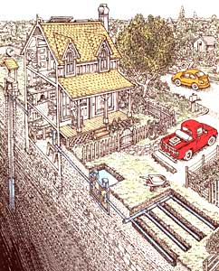
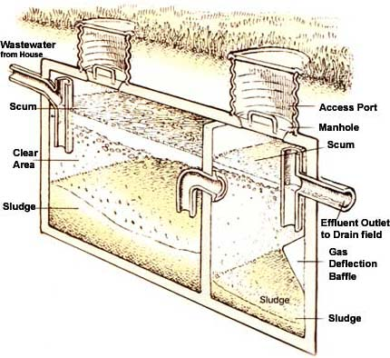
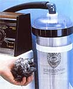

Septic System Basics
By Carol Steinfeld: Illustrations by Peter Aschwanden.
October/November 2002
Adapted from The Septic System Owner's Manual
David Hayward came home one summer day to find brown, swampy puddles in his front yard. As he puzzled over the brown ooze, his neighbor strolled over and identified the problem: "Looks like your septic system went." Until that day, David didn't know septic systems died-he thought of his system as a simple underground tank that just made wastewater disappear.
His local septic contractor pumped the system out-twice. The diagnosis: Clogged leach field. The recommendation: Replace the entire leach field to the tune of $12,000.
While city dwellers connected to a public sewer typically flush and forget about it, homesteaders living outside of the municipal sewage system are forced to face their waste and are required to have their own wastewater treatment system, typically a septic system. And septic systems commonly fail, says Joe Brown, who operates Septic Sage, a septic pumping and consulting business in Newburyport. Massachusetts. "A septic system is more than a disposal system -it's a living ecosystem. You wouldn't feed your pet something it couldn't digest, nor would you give it more than it could eat or drink at one sitting. Yet we do that to septic systems all the time, and then wonder why they suffer from backups or clogged arteries and fail." To get the maximum life from your septic system, Joe says, install a good system in an appropriate place and monitor what goes into it.
In a poorly sited or malfunctioning septic system, disease-causing organisms and toxic chemicals can move into groundwater sources. A faulty system can leach nitrogen nutrients from urine into drinking water, causing a variety of problems. When ingested, nitrogen interferes with the blood's ability to carry oxygen, a condition known as methemoglobinemia, or blue baby syndrome, which can be fatal to infants. Nutrients also can make their way into surface waters, such as lakes and streams, resulting in excessive growth of plants. As the plants die and decompose, they consume oxygen in the water, further choking off other aquatic life. And if you don't have a well-functioning septic system, you might be cited by local authorities and required to upgrade your system, often for a price tag of thousands of dollars.
Subterranean Mysteries
The Septic System Owner's Manual by Lloyd Kahn, Blair Allen and Julie Jones ($14.95 on MOTHER's Bookshelf, Page 103) is a fun, easy-to-read book with fantastic information about maintaining your system. Full of excellent illustrations, the authors tackle this notoriously odoriferous issue with verve and simplicity. They lead the reader through the fundamentals of septic systems and explicitly, but gently, reveal their anaerobic innards and workings in layperson's terms. Includes a detailed chart to map your septic system and record routine maintenance.
Septic System Sources

A laundry filter, pictured above, keeps
particulates from plugging up your septic
system leach field.
Most states publish septic system maintenance guides as well as handy records for keeping track of septic pumpouts. Contact your state department of environmental protection.
GUIDES; & ORGANIZATIONS
Minnesota Extension Service Distribution Center
University of Minnesota
1420 Eckles Ave.
St. Paul, MN 55108-6069
(800) 876-8636
The Septic System Owner's Guide ($4) from the Minnesota Extension Service features good basic septic care information, formulas for helping to determine pumping frequency and convenient folders with which to keep track of the details of your septic 's specifics (size, location and features) and pumping record. A video ($13) is also available.
National Small Flows Clearinghouse
West Virginia University
P0. Box 6064
Morgantown, WV 26506
(800) 624-8301
www.nesc.wvu.edu/usfc
The National Small Flows Clearinghouse is a federal government-funded source of information about on-site residential and commercial wastewater systems. This is the place to start for basic on-site wastewater information, such as alternative systems.
EFFLUENT FILTERS & SCREENS
Orenco Systems, Inc.
814 Airway Ave.
Sutherlin, OR 97479
(800) 3489843
www.orenco.com
Septic Protector
14622 268th Ave.
Zimmerman, MN 55398
(888) 873-6504
www.septicprotector.com
Zabel Zone
P.O. Box 1520
Crestwood, KY 40014
(800) 221-5742
www.zabelzone.com
SEPTIC SYSTEMS
The purpose of a septic system is to create an environment where beneficial bacteria destroy pathogens and take up excess nutrients in wastewater. Wastewater enters the septic tank, which is essentially a storage unit, from a high inlet pipe and exits through a lower outlet pipe. Inside the tank, lightweight solids like fibers, hair and grease float to the top and form the scum layer. Sediments that sink to the bottom comprise the sludge layer. Clearer wastewater drains out into the leach field, also known as the drain field. The longer wastewater remains in the tank (retention time), the greater the chance anything that could potentially clog the drain field will sink or float. To allow, more time for settling, newer septic tanks feature one or more baffles or dividers to slow down the passage of wastewater from inlet to outlet. Naturally occurring anaerobic (oxygenless) bacteria in the tank start the biological breakdown process, but usually do not kill pathogens or remove toxic chemicals.
SOIL ABSORPTION SYSTEMS
A common misconception is that the key component of a septic system is the septic tank. "The soil absorption system, or leach field, is where the real treatment occurs," Joe says.
After the septic tank has settled out solids, clarified wastewater is dispersed through perforated pipes into the soil. In Septic Tank Practices, Peter Warshall says soil is the key to clean water. It acts as a "physical strainer, chemical renovator and a biological recycler" for the wastewater passing through it. Your soil absorption system may be called a leach field, leach bed, soil absorption field, seepage bed or mound, but all act similarly.
Beneath and to the sides of the pipes, a black, jellylike mat or biomat forms. This thin layer of anaerobic organisms helps regulate the flow of wastewater to the soil and preys on potentially pathogenic bacteria, viruses and parasites. It also converts nutrients into a form that can be used by plants or releases nutrients into the atmosphere as gases. The biomat also is a common trouble spot for clogging, as it has low permeability. Failing to pump out your septic system or discharging too much wastewater down the drain can lead to a buildup of organic material, which causes the biomat to grow too thick.
Your leach field may be a series of trenches into which wastewater flows by gravity. If your system is older, your leach field may be buried 5 feet deep. More modern leach fields use drip-irrigation lines, usually buried only 6 to 8 inches tinder the surface to keep wastewater in the zone of microbiological activity and within the root zones of plants. Some septic owners use alternating fields: a shallow leach field in summer, when plants can use wastewater nutrients; and a deeper leach field in winter, when plants are dormant. A diverter valve switches the flow.
Leach fields work best when the soil surrounding them is well-drained. Don't do anything that could compact the soil, such as driving heavy trucks over it (a lawn mower is fine). Grass planted over your leach field helps keep the soil aerated. Don't plant trees with deep roots, especially invasive species such as willows.
If your property does not have permeable soils or the soil is too permeable for filtering, your leach field may need to be built up with sand to create a mound system. Instead of distributing wastewater underneath the soil surface, wastewater is pumped up onto the mound, where it percolates through a layer of sand before contacting native soil.
PUMPING IT
"A few times a year, I'll be called out to pump a system, and the homeowner doesn't know where it is," Joe says. "After a little probing, we'll find it under their new house addition or a driveway! When you buy a house, locate the septic system. Better yet, check out the system before you buy the house."
If you're unsure where your septic system's inspection or clean-out hatch is located, go into your basement and find your wastewater line-it's usually the largest-diameter pipe, made of plastic or cast iron-and follow its general direction outside. Probe the soil as far out as 15 feet. Look for raised or sunken spots in your yard, or areas where plants are growing particularly well. Once you find it, make a map.
"Some people will tell you that they've never pumped out their systems," Joe says. "In warmer climates and back when we didn't use so much water, toxics and nonbiodegradable products, this might have worked. But these days, going long periods without pump-outs is asking for trouble."
After a new home is built, have the system pumped within the next six to 12 months, especially if toxic chemical finishing agents were rinsed into it. Most states offer convenient folders and charts on which you can calculate pumping frequency and keep accurate maintenance records.
A septic system must be pumped out periodically to remove both floating scum and the sludge on the bottom. Failure to do this can result in an expensive repair or even replacement of the entire system. Experts recommend pumping your septic tank every two to three years, unless you use grease traps and particle filters.
SEPTIC CARE
A properly designed and well-sited system that's also maintained well can be effective and environmentally responsible, says Joe. "We live in different times, and we can't take wastewater management for granted. It's important that we respect our septic systems as the living machinery that they are. It's not hard, but like any living thing, it needs daily awareness and effort." Paying attention to these simple septic tips can significantly extend the life of your system.
Keep It Clean. Take a load off your septic system whenever you can by composting kitchen scraps and using biodegradable and nontoxic cleaning products. Many toilet bowl cleaners, antibacterial agents and drain cleaners can kill beneficial bacteria in your system. Dispose of all solvents, paints, antifreeze and other chemicals through local recycling and hazardous waste centers. Never let wash water from latex paint on brushes or rollers go down the drain and into the septic system. Use phosphate-free liquid detergents instead of powders, which can clog your leach field, or switch to Liquid soap instead. Although small amounts of chlorine appear to have little effect on septic systems, use hydrogen peroxide-based bleaches to keep this potential carcinogen out of the watershed.
Filter Out Fibers. Keep fibers and particles out of the septic system. Many of today's fabrics are made of recycled plastic soda bottles and other nondegradable fibers that can clog your leach field. The Septic Protector ($150) attaches to your washing machine drain to remove these fibers. Septic tank filters also can be added to the outlet of your septic tank to keep fibers and particles out of the leach field. (See "Septic System Sources," at left.)
Don't Go with the Flow. Prevent large volumes of water from entering your system all at once. A flood of water reduces the time wastewater is retained in the tank, leaving fewer opportunities for solids to settle out and for anaerobic bacteria to start the breakdown process. It also can stir up sediment and flush it into the leach field, causing clogs. Route roof drains and basement drainage-tile water outside of the septic system and away from the leach field. Drain water from pools, hot tubs and roof drains to a ditch or separate dry well.
To reduce water consumption further, install faucet aerators and low-flow showerheads, which give more force to less water. Take shorter showers and use showerheads that allow you to easily turn them off when you're lathering up. And shut off water while you're shaving or brushing your teeth. Wash only full loads in the dishwasher, or handwash dishes with a basin of soapy water and a basin of clear rinse water.
Front-loading washing machines use almost half the water of top-loading washers. Wash only full loads, and adjust load level settings for small loads. Distribute wash loads evenly throughout the week to avoid overloading the system with large volumes of water.
Consider installing a gray -water system to use shower and wash water for irrigation. Your local health agency may permit a system that is properly sized, self-contained and allows no graywater to come to the surface.
If you have a water softener system, use potassium-ion exchange resins instead of sodium-ion exchange resins. They're a little more expensive, but they are much easier on your system. Recharge your water softener as infrequently as possible to reduce water use, and re-route the water softener recharge water outside the septic system. It does not need to be treated, and the salts can damage your leach field.
About 60 percent of the water used in most American homes is used in the bathroom, and most of it goes to flushing toilets. To conserve water and increase the life of your septic system, consider installing a low-flush toilet. Most lowflush or ultra-low-flush toilets use 1.6 gallons per flush; some flush with less than a gallon. (See "Water-Wise Toilets," June/July 2002.) Don't flush paper towels, feminine sanitary products and other slow -to-degrade materials, like cat litter, in the toilet.
Finally: Don't Flush that Fertilizer! Consider buying a composting toilet to keep blackwater, which contains the most potential pathogens, out of wastewater entirely. In some states, installing a composting toilet allows you to construct a smaller, less expensive leach field.
If your state doesn't yet permit composting toilets, instead of flushing urine down the drain, where it pollutes waterways and chokes off ponds and lakes, you easily can capture urine's valuable nutrients to enrich garden growth and boost backyard compost-bin activity.
All you need is a funnel, a container for collection, like a plastic gallon milk jug, and some plants or a compost pile to water. Or you can just pee into a bucket, then use the urine immediately. For vegetables, fruit trees or anything else on which you want to encourage rapid, green growth, dilute urine with water at about a 1-10 ratio and pour it around the plant roots. Dilute urine also is an excellent addition to a compost pile that is carbon-rich, but nitrogen-poor. The urea in urine helps break down lignin, accelerating the decomposition of woody materials.
Urine constitutes the bulk of human excrement and also contains most of the nutrients. The nitrogen, phosphorous and potassium found in urine are available in ideal chemical forms for plants. And urine is virtually free from the heavy metals that may be found in many commercial fertilizers.
Unlike feces, urine is commonly sterile. Pathogens that may be transmitted through urine, says Caroline Schonning of the Swedish Institute for Disease Control, are rarely sufficient to cause a significant public health problem. When urine is used in temperate climates, she says, it is not considered a health risk.
Carol Steinfeld is projects director for the Center for Ecological Pollution Prevention in Concord, Massachusetts, and co-author of The Composting Toilet Systems Book, on MOTHER's Bookshelf, Page 103. She most recently co-authored "Water-Wise Toilets," in Mother Earth News, June/July 2002.
|
 Get septic-system savvy: Understanding your system's innards will help you keep it in good working condition. |
 A laundry filter, pictured above, keeps particulates from plugging up your septic system leach field. |
 Sterile urine is a good source of nitrogen, phosphorous and potassium, and can be diluted with water at a ratio of 1- to- 10 to help your garden grow. |
|
|
|
|